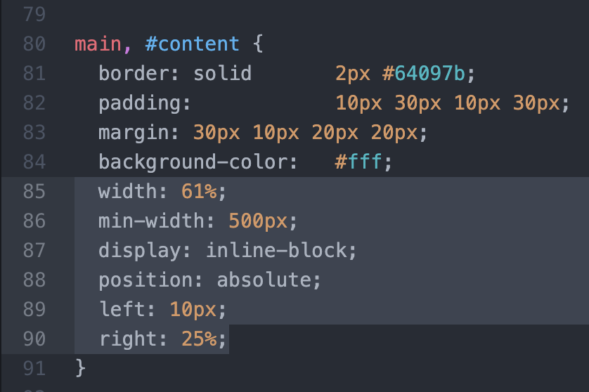

Results
Creating our files and new divs was easy enough. The real hardship
came when we began to style in css.
Styling nav was the easiest to style since we just used position: sticky
and placed how far or low the bar would sit. The aside bar was the hardest to work wiith.
We couldnt decide on a position to use. I used relative and leo used absolute.
We then worked on the placement values when we were in inspector.
Troubleshooting was extremely frustrating. We couldnt get our block
to go to the right for the longest and it would overlap our main content block
dispite both being inline-blocks. In the ende we came up with a semi conclusion
but I'm not sure it works on Leo's end so its not a true fix. We were really stumped
in this lab.
